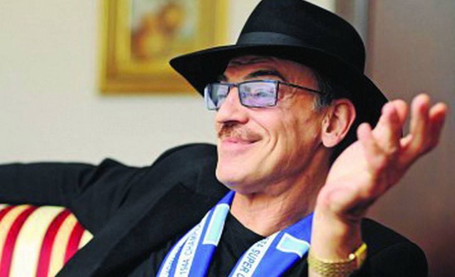

| 10:09
Наша постоянная рубрика "Звезды тоже болеют"
Михаил Боярский: Я победил диабет без врачей! И «профессиональным» больным становиться не собираюсь.
Легендарный «мушкетер» Михаил Боярский страдал сахарным диабетом уже более 20 лет. Сначала актер не подозревал, что болен, он упивался работой. А между съемками и спектаклями предавался вредным привычкам. Много курил и не отказывал себе в алкогольных напитках. Но однажды на съемках в Германии Михаилу Сергеевичу стало плохо. У него резко ухудшилось зрение, и началась непреодолимая жажда. К врачам знаменитый д’Артаньян не спешил. Думал, что все пройдет. Однако после полного обследования доктора поставили неутешительный диагноз – инсулинозависимый сахарный диабет...
- Михаил, расскажите, как давно вы столкнулись сахарным диабетом? С чего все началось?
Михаил: Лет 25 тому назад на даче, вкусно поев шашлыков и запив это дело большим количеством спиртного, я проснулся утром с ощущением боли в области поджелудочной железы. Думал - отравление. Поэтому решил погасить все пивом. Не получилось... Стало еще хуже. Ночью не уснуть. Тошнота постоянная. Боли все сильней... На следующий день попробовал выпить - опять не идет. Вызвали «Скорую». А потом я почти потерял память. Пролежал в реанимации 10 дней.
И так в течение 5 - 7 лет. Со спектакля - в больницу, и по 10 дней без памяти. Лежал с ребятами-«афганцами». Они кричат, я кричу - вместе вроде полегче.
Постепенно боли стали исчезать. Даже, когда выпивал. Судя по всему, начался панкреанекроз - отмирание поджелудочной железы. Это привело к сахарному диабету. Начал колоть инсулин. Но «профессиональным» больным становиться даже не собирался. Презираю это дело. Меня оскорбляет, что болезнь может быть сильнее меня. Так что, не делайте из меня инвалида!
- Какие симптомы диабета вас затронули?
Михаил: Я, наверное, был из тех «счастливчиков», которым пришлось пережить практически все симптомы диабета. По мне можно было составлять описание болезни во всех подробностях и со всеми нюансами.
- Вы научились уживаться с сахарным диабетом?
Михаил: По молодости мне не дал скатиться в жизни именно сахарный диабет. Если бы я был здоров как бык, давно бы ничего не делал... Я хорошо изучил свою болезнь. Знаю, от чего что бывает, что помогает убрать симптомы, что облегчает мою жизнь. Ведь у меня была очень серьезная форма диабета. Жил в согласии с тем, что мне предопределено.
Хорошо, что на сегодняшний день, есть действительно хорошие средства, которые помогают справиться с болезнью. Вот еще 10 лет назад было намного сложнее!
- Михаил, расскажите подробнее о средствах, которые вам помогли.
Михаил: Я испытал на себе все, что только доступно на сегодняшний день. Я пил разного рода таблетки, пробовал нетрадиционную мидицину, иглоукалывания. Лечился не только в России, но и за границей. Я потратил кучу денег. Мне периодически становилось лучше, и я верил, что болезнь отступила. Однако все возвращалось опять. И чем дальше, тем чаще и сильнее.
Но методом проб и ошибок я все-таки нашел то, что помогло мне справляться с болезнью. Я ни в коем случае не хочу рекламировать этот продукт, мне за это не платят. Но я буду рад, если кому-то мой опыт тоже поможет. Лично меня спасает Diabenot. Его посоветовал мне хороший друг из Белоруссии, который также поборол сахарный диабет.
- Расскажите подробнее, что это за средство и как оно действует?
Михаил: Всех подробностей и не упомню, конечно же, но подробную информацию можно почитать на официальном сайте, заказывал именно тут. 2 капсулы с разной длительностью действия. Первая капсула растворяется быстро и устраняет гипергликемический эффект. Вторая – усваивается медленно и стабилизирует состояние больного. Сочетание специальной диеты и DiabeNot повышает шансы победить диабет.
Он устраняет нарушения углеводного обмена (являющиеся основной причиной развития диабета), улучшает метаболизм. Нормализует уровень сахара в крови, причем очень быстро. Стимулирует секреторную функцию поджелудочной железы.
После приема Diabenot я ощущаю прилив сил и энергии. У меня ушли такие симптомы, как слабость и хроническая усталость, я стал более бодрым, и работоспособность значительно увеличилась. Стало проще дышать, двигаться. Даже улучшилось зрение, чему я даже удивился. Я понял, что для меня это единственный правильный выход!
Когда я начал пить Diabenot, казалось, что такого быть не может, но все это происходило именно со мной. Диабет отступал на глазах. Это моя личная победа!
- Как вы себя чувствуете на сегодняшний день?
Михаил: После прохождения курса я стал здоров абсолютно! Полностью! Самым главным достоинством Diabenot является комплексное воздействие. Классическое лечение часто не убирает первопричину заболевания, а только борется с его внешними проявлениями. А Diabenot восстанавливает организм полностью.
- Что вы можете посоветовать нашим читателям?
Михаил: Жизнь на диагнозе сахарный диабет - не заканчивается! Как вы можете видеть, путь к здоровью не такой трудный. Diabenot можете заказать здесь. Это официальный сайт.
Я буду очень рад, что смог дать добрый совет! А вообще побольше позитива и хорошего настроения, и тогда никакие болезни нас не сломают!

- Михаил, расскажите, как давно вы столкнулись сахарным диабетом? С чего все началось?
Михаил: Лет 25 тому назад на даче, вкусно поев шашлыков и запив это дело большим количеством спиртного, я проснулся утром с ощущением боли в области поджелудочной железы. Думал - отравление. Поэтому решил погасить все пивом. Не получилось... Стало еще хуже. Ночью не уснуть. Тошнота постоянная. Боли все сильней... На следующий день попробовал выпить - опять не идет. Вызвали «Скорую». А потом я почти потерял память. Пролежал в реанимации 10 дней.
И так в течение 5 - 7 лет. Со спектакля - в больницу, и по 10 дней без памяти. Лежал с ребятами-«афганцами». Они кричат, я кричу - вместе вроде полегче.
Постепенно боли стали исчезать. Даже, когда выпивал. Судя по всему, начался панкреанекроз - отмирание поджелудочной железы. Это привело к сахарному диабету. Начал колоть инсулин. Но «профессиональным» больным становиться даже не собирался. Презираю это дело. Меня оскорбляет, что болезнь может быть сильнее меня. Так что, не делайте из меня инвалида!
- Какие симптомы диабета вас затронули?
Михаил: Я, наверное, был из тех «счастливчиков», которым пришлось пережить практически все симптомы диабета. По мне можно было составлять описание болезни во всех подробностях и со всеми нюансами.
- Вы научились уживаться с сахарным диабетом?
Михаил: По молодости мне не дал скатиться в жизни именно сахарный диабет. Если бы я был здоров как бык, давно бы ничего не делал... Я хорошо изучил свою болезнь. Знаю, от чего что бывает, что помогает убрать симптомы, что облегчает мою жизнь. Ведь у меня была очень серьезная форма диабета. Жил в согласии с тем, что мне предопределено.
Хорошо, что на сегодняшний день, есть действительно хорошие средства, которые помогают справиться с болезнью. Вот еще 10 лет назад было намного сложнее!
- Михаил, расскажите подробнее о средствах, которые вам помогли.
Михаил: Я испытал на себе все, что только доступно на сегодняшний день. Я пил разного рода таблетки, пробовал нетрадиционную мидицину, иглоукалывания. Лечился не только в России, но и за границей. Я потратил кучу денег. Мне периодически становилось лучше, и я верил, что болезнь отступила. Однако все возвращалось опять. И чем дальше, тем чаще и сильнее.
Но методом проб и ошибок я все-таки нашел то, что помогло мне справляться с болезнью. Я ни в коем случае не хочу рекламировать этот продукт, мне за это не платят. Но я буду рад, если кому-то мой опыт тоже поможет. Лично меня спасает Diabenot. Его посоветовал мне хороший друг из Белоруссии, который также поборол сахарный диабет.
- Расскажите подробнее, что это за средство и как оно действует?
Михаил: Всех подробностей и не упомню, конечно же, но подробную информацию можно почитать на официальном сайте, заказывал именно тут. 2 капсулы с разной длительностью действия. Первая капсула растворяется быстро и устраняет гипергликемический эффект. Вторая – усваивается медленно и стабилизирует состояние больного. Сочетание специальной диеты и DiabeNot повышает шансы победить диабет.
Он устраняет нарушения углеводного обмена (являющиеся основной причиной развития диабета), улучшает метаболизм. Нормализует уровень сахара в крови, причем очень быстро. Стимулирует секреторную функцию поджелудочной железы.
После приема Diabenot я ощущаю прилив сил и энергии. У меня ушли такие симптомы, как слабость и хроническая усталость, я стал более бодрым, и работоспособность значительно увеличилась. Стало проще дышать, двигаться. Даже улучшилось зрение, чему я даже удивился. Я понял, что для меня это единственный правильный выход!
Когда я начал пить Diabenot, казалось, что такого быть не может, но все это происходило именно со мной. Диабет отступал на глазах. Это моя личная победа!
*Комментарий врача:
"Современные препараты от диабета направлены на устранение симптомов заболевания, а не причин. Капсулы от диабета Diabenot направлены на длительную ремиссию. Уже после 1 курса диабет постепенно проходит, восстанавливается работа всех систем организма. Эффективность капсул подтвердили как лабораторные исследования, так и практическое применение. После курса Diabenot динамика лечения диабета у моих пациентов заметно улучшилась. Рекомендую это современное и эффективное средство."
- Как вы себя чувствуете на сегодняшний день?
Михаил: После прохождения курса я стал здоров абсолютно! Полностью! Самым главным достоинством Diabenot является комплексное воздействие. Классическое лечение часто не убирает первопричину заболевания, а только борется с его внешними проявлениями. А Diabenot восстанавливает организм полностью.
- Что вы можете посоветовать нашим читателям?
Михаил: Жизнь на диагнозе сахарный диабет - не заканчивается! Как вы можете видеть, путь к здоровью не такой трудный. Diabenot можете заказать здесь. Это официальный сайт.
Я буду очень рад, что смог дать добрый совет! А вообще побольше позитива и хорошего настроения, и тогда никакие болезни нас не сломают!
прием провел врач-эндокринолог Иван Федорчук
Хочу поделиться своим опытом. О Diabenot узнала совершенно случайно, но, прочитав о его действии, не раздумывая купила сразу. У меня сахарный диабет, остеохондроз, сильные отеки на руках и ногах. Лечащий врач давно махнул рукой на появление все новых и новых заболеваний. А спустя год приема Diabenot не верит своим глазам! Я похудела на 12 кг и совершенно не похожа на ту старую и больную женщину, что была раньше! Меня даже знакомые, кто давно не видел, узнавать перестали! Спасибо тем, кто создал Diabenot!
Здравствуйте! Болею сахарным диабетом инсулинозависимым уже 10 лет. Принимать Diabenot начала с целью с нормализации давления, но неожиданно для меня улучшилось общее самочувствие. Сейчас отмечается снижение сахара в крови, спасибо Вам, что делитесь своим опытом! Думаю многие скажут Вам спасибо за это!
Очень рада, что нашла эту статью. Обязательно буду пробовать Diabenot.
Diabenot - просто спасение для людей с сахарным диабетом! Говорю это не понаслышке, сама страдала от «прелестей» болезни. Все в корне изменилось после приема этого средства.
Из-за диабета очень упало зрение и появились раны на ногах. Прием Diabenot очень помог улучшить состояние! Советую!
Я сама этот Diabenot не пробовала. но отзыв пишу со слов близкого человека. Года 2 назад у свекра, врачи обнаружили диабет. Началась диетная жизнь. Мука в основном ржаная, выпечка только домашняя из той же ржаной муки, сладкое исключить, раздельное питание и т. д. и т. п. А еще постоянные проверки уровня сахара, обследования... В общем - не жизнь, а потакание врачам.
Однажды попался на глаза мне сайт с описанием Diabenot
Вот мы и решили: а почему бы не попробовать этот чудодейственный Diabenot? Хуже точно быть не должно, а если вдруг действительно поможет?
Оговорюсь, что свекру уже глубоко за 70 и болячки начинают вылезать.
И вот купили, прочитали инструкцию, спросили совета у медиков в компании и начали эксперимент.
Каждый день свекор начинал с приема Diabenot, а потом вел привычный уже образ жизни. Инсулин он не принимал, врачи сказали, что можно обходиться и без него (по крайней мере пока). Уровень сахара на момент начала эксперимента держался в диапазоне 8 - 10 чего-то там... пусть будет пунктов.
К исходу 15 дня проверили сахар и обалдели: 5 пунктов! Решили продолжать эксперимент, тем более, что проявились и другие "побочные" эффекты. Свекор стал более энергичным. Как он сам говорит: спать стал крепче, а по утрам поднимается, как молодой. Давление почти перестало скакать и пальцы "расшевелились" (у него то ли артрит, то ли артроз... суставы на пальцах рук опухали, болели и мешали сгибаться-разгибаться). Конечно, всё не вернулось в идеальное состояние, но свекор отметил явное улучшение по всем фронтам. Так что только положительные стороны!
Я три недели пью этот Diabenot, поэтому про длительность эффекта ничего не скажу. А вот про тяжелую степень... я лично знаю человека, у которого сахар зашкаливал больше 15 единиц, а после курса Diabenot колеблется в диапазоне 8-11!
Я тоже спасаюсь этим средством. Состояние очень улучшилось. Хотя диагноз сахарный диабет не снимают, но это совершенно два разных состония, до приема и после!
Поробуем! Спасибо за совет